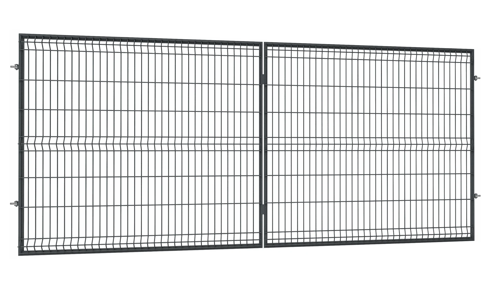
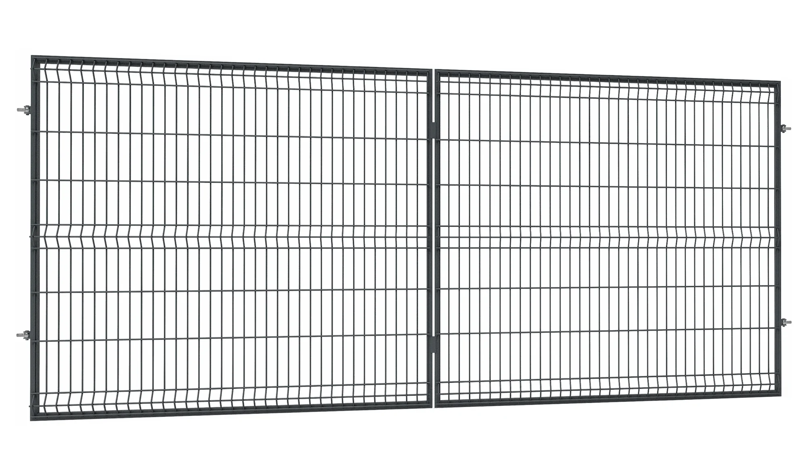

Metalzbyt Centrum Ogrodzeń – Olsztyn
Ogrodzenia w jednym miejscu: siatki, panele, bramy i furtki
Pomagamy dobrać trwałe rozwiązania do grodzenia posesji – od siatek i paneli, po bramy i furtki z osprzętem. Doradztwo specjalistów i konkurencyjne ceny.
Siatki ogrodzeniowe
Rozwiązania do ogrodzenia posesji – siatki, słupki i akcesoria montażowe.
Oferta siatekPanele ogrodzeniowe
Nowoczesne panele i systemy montażu – estetyczne i trwałe ogrodzenia.
Oferta paneliBramy i furtki
Bramy, furtki i osprzęt – kompletne systemy wjazdowe dopasowane do ogrodzeń.
Oferta bramKraty pomostowe
Kraty do ciągów komunikacyjnych i zastosowań przemysłowych – ocynk, nierdzewka, akcesoria montażowe.
Oferta kratCentrum Ogrodzeń – Metalzbyt Olsztyn
Dobrze dobrane ogrodzenie to połączenie trwałości, estetyki i bezpieczeństwa. Dlatego w Centrum Ogrodzeń Metalzbyt w Olsztynie pomagamy klientom dobrać system dopasowany do warunków montażu i oczekiwanego efektu – od ogrodzeń z siatki, przez panele, aż po przęsła. Domknięciem każdej inwestycji są różnego typu bramy oraz furtki.
Oferujemy sprawdzone rozwiązania do posesji prywatnych oraz firm. Dobieramy elementy systemu (słupki, obejmy, łączniki i osprzęt) tak, aby montaż był prosty, a całość spójna wizualnie. Możesz liczyć na praktyczne doradztwo i uczciwe podejście – pod kątem trwałości, budżetu i terminu.
Jeśli planujesz ogrodzenie domu, działki, firmy lub inwestycji – skontaktuj się z nami. Pomożemy dobrać odpowiedni system, policzyć potrzebne elementy i przygotować ofertę.
Stawiamy na jakość, terminowość i obsługę, do której chce się wracać. Wybierz rozwiązanie, które będzie trwałe przez lata.
Zapewniamy dostawę zakupionych ogrodzeń - pod wskazaną lokalizację.
Siatki ogrodzeniowe
Pomagamy dobrać komplet do ogrodzenia z siatki:
- Produkujemy siatkę ogrodzeniową ocynkowaną (OCYNK) w wysokościach od 1 m do 2 m.
- Standardowa długość rolki: 10 mb.
- Oferujemy różne rodzaje siatek: krępowane, zgrzewane oraz tkane.
- Słupki i elementy montażowe – dopasowane do wybranego systemu ogrodzenia.
- Akcesoria i osprzęt – kompletacja pod długość ogrodzenia i warunki montażu.
- Doradztwo – dobór optymalnego rozwiązania do zastosowań prywatnych i firmowych.


Panele ogrodzeniowe
Nowoczesne rozwiązania ogrodzeniowe – trwałe i estetyczne:
- Jesteśmy dystrybutorem paneli ogrodzeniowych 2D (6/5/6 oraz 8/6/8) i 3D (drut 4 mm i 5 mm).
- Panele przeznaczone do posesji prywatnych, firm i obiektów przemysłowych.
- Oferowane wysokości: od 1 m do 2 m, standardowa długość panelu: 2,5 m.
- Elementy montażowe i osprzęt – kompletacja pod wybrany system.
- Rozwiązania uzupełniające – spójny wygląd całego ogrodzenia.
- Doradztwo – pomoc w doborze paneli do warunków montażu.
 



Bramy i furtki
Systemy wjazdowe i elementy uzupełniające ogrodzenie:
- Bramy uchylne i przesuwne – z możliwością montażu napędu.
- Szerokości bram: od 3 m do 8 m, wysokości od 1 m do 2 m.
- Furtki ogrodzeniowe – spójne stylistycznie z systemem ogrodzenia.
- Wykonanie pod indywidualne potrzeby i wymiary klienta.
- Osprzęt i akcesoria – kompletacja pod montaż i codzienne użytkowanie.
- Doradztwo – dobór optymalnego zestawu do posesji prywatnych i firmowych.
Kraty pomostowe – przemysłowe i techniczne
W Centrum Ogrodzeń Metalzbyt w Olsztynie oferujemy kraty pomostowe o szerokim zastosowaniu technicznym i przemysłowym. Sprawdzają się jako ciągi komunikacyjne piesze oraz dla pojazdów mechanicznych, takich jak wózki widłowe, paleciaki czy samochody.
- Zastosowanie w inwestycjach przemysłowych, transporcie i obiektach technicznych.
- Typowe wymiary: od 300 × 1000 mm do 1500 × 1000 mm.
- Wykonanie pod indywidualną specyfikację i wymiary projektowe.
- Wersje zgrzewane i prasowane – stal ocynkowana lub nierdzewna.
- Komplet akcesoriów: uchwyty, klamry i elementy mocujące do konstrukcji.


Kontakt – Metalzbyt Centrum Ogrodzeń
Adres: Stalowa 1, 10-959 Olsztyn
Telefon: +48 89 532 95 72
Komórka: 531 775 666
Email: bh2@metalzbyt.com.pl
Inne działy Metalzbyt:
Sklep internetowy – narzędzia i materiały budowlane
Centrum Stali Metalzbyt – wyroby hutnicze i zbrojenia
Godziny otwarcia:
Poniedziałek – Piątek: 7:00–16:00
Sobota: 7:00–14:00